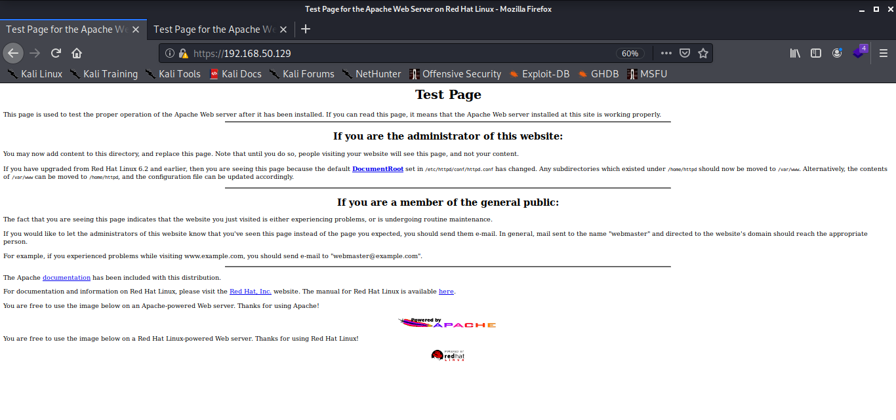

we had ports
22
80
443
139
11
32768
so we need to think abt point of attack
sir feels ports 80 and 443 and 139 and sometimes 445 also
coz these are commonly found with exploits
in 2017 wannacry virus was there it utilised a flaw in smb and also websites have flwed
port 22 was ssh which isnt so prone to flaws
remote code executuon is not usually there on ssh
(means running exploit and getting shell back)
not common to attack ssh
it isnt juicy kinda
so lets go for 80 and 443
we ll go for the website means search its ip address online

in network penetration or web penetration test
if we such an automatic page then it is an automatic finding
it isnt exploitable
Here we got to know its running apache and red hat linux
so if a client has a default web page like this we would wanna know ki is there a directory associated
it could be they arent hostng something and just put their default page on this site
So this is poor hygiene
when we clicked on the documentation link

they should have given a page like error 404 not found bt they disclosed this info
Apache/1.3.20 Server at 127.0.0.1 Port 443
now we ll do web vulnerability scannner
using nikto
if like website has good security it will automatically block your nikto
(bt thats not common)

so trying http instead

these were the findings to be written in a report
the remote vulnerabilities are the ones whuch we can attack na

like the ones above
also this below

trace is potenitially vulnerable which could lead to cross site scripting (its just info for us now coz havent studied it yet na)
saving all info to a folder named kioptrix